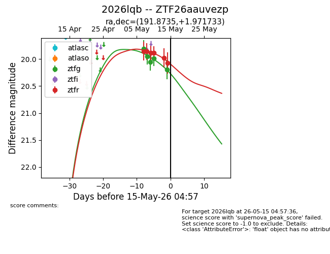
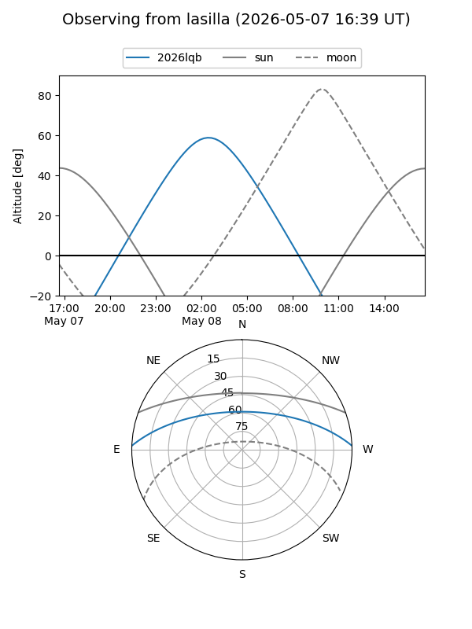
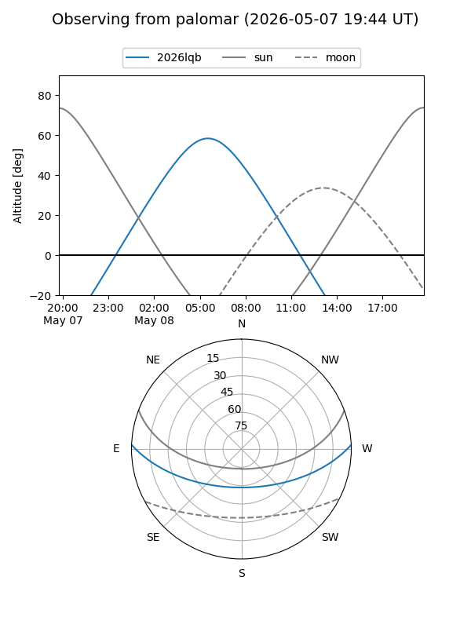
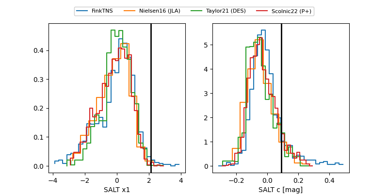

2026lqb
Target 2026lqb at 2026-05-15 04:59
Aliases and brokers:
FINK: link
Lasair: link
ALeRCE: link
TNS: link
YSE: link
alt names
ZTF26aauvezp (ztf,fink_ztf)
2026lqb (tns,yse)
Coordinates:
equatorial (ra, dec) = 191.8735,+1.97173
equatorial (HMS+DMS) = 12:47:29.64,+01:58:18.24
galactic (l, b) = (300.6149,+64.82574)
Flags:
Photometry:
last ztfg=20.19, ztfr=20.07
5 ztfg, 6 ztfr detections
Lightcurve

Visibility


Additional plots
